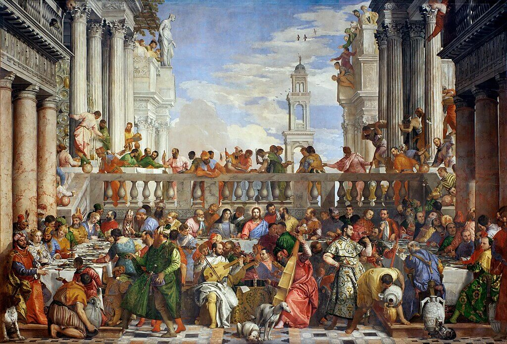
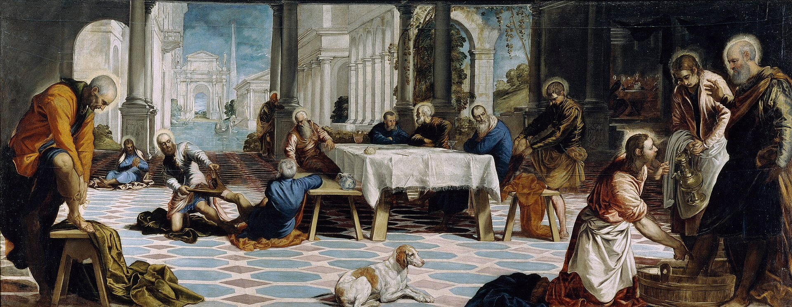
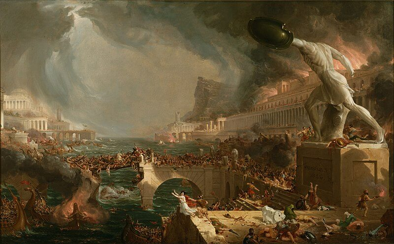

| El Blog del Arte | ||
|---|---|---|
| Las Bodas de Caná | Lavatorio de Tintoretto | La caída del Imperio |
| Galeria | ||
|  |
Las Bodas de Canáde Paolo Veronese, creada en 1563, es una obra maestra del Renacimiento italiano. Este monumental fresco, ubicado en el Museo del Louvre, muestra la escena del milagro de Jesús transformando agua en vino en una exuberante celebración nupcial. La composición es vibrante y rica en detalles, con una multitud de personajes vestidos con lujosos trajes y un festín opulento que subraya la magnificencia del evento. Veronese emplea una paleta de colores intensos y una perspectiva grandiosa, destacando la interacción dinámica entre los invitados y la atmósfera alegre del banquete. La pintura no solo celebra la intervención divina, sino también el esplendor del arte y la cultura renacentista. |
|
|  |
Lavatorio de Tintorettode Jacopo Tintoretto, pintado alrededor de 1548-1549, es una obra destacada del Renacimiento italiano. Esta pintura, ubicada en la Iglesia de San Marcuola en Venecia, representa el momento en que Jesús lava los pies de sus discípulos, un acto de humildad y servicio. Tintoretto emplea una composición dramática y dinámica, con un uso magistral de la luz y el color para resaltar la intensidad emocional de la escena. La perspectiva y el encuadre enfatizan el gesto de humildad de Jesús, contrastado con la reacción de los discípulos. La obra refleja la habilidad de Tintoretto para combinar el realismo con la espiritualidad, capturando tanto el sentido religioso del evento como el fervor dramático típico de su estilo. |
|
|  |
La Caída del Imperiode Thomas Cole, completada en 1836, que forma parte de su serie de obras sobre la temática de las civilizaciones. Esta pieza presenta una visión apocalíptica del colapso de una gran civilización, representada con un gran esplendor y luego en ruinas. Cole utiliza una composición dramática para mostrar una ciudad majestuosa en decadencia, con edificios desmoronados y desolación en un paisaje desolado. El cielo, pintado en tonos oscuros y tormentosos, añade a la atmósfera de catástrofe inminente. La obra simboliza la transitoriedad del poder y la inevitable caída de los imperios, reflejando tanto la preocupación de Cole por la historia como su habilidad para capturar la sublime belleza de la naturaleza en contraste con la decadencia humana. |
|